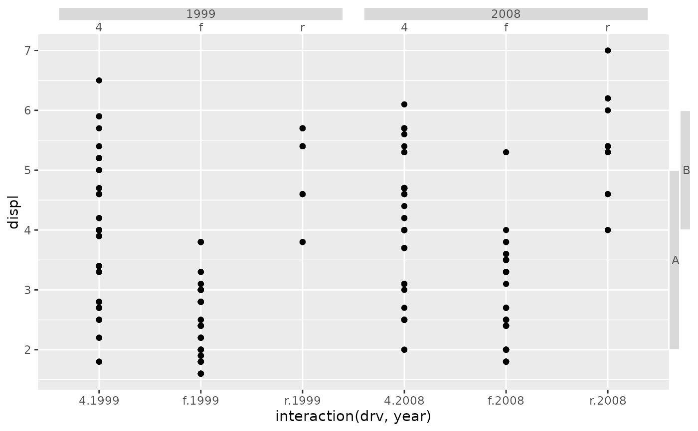

This function constructs a boxes guide primitive.
Arguments
- key
A range key specification. See more information in the linked topic.
- angle
A specification for the text angle. Compared to setting the
angleargument inelement_text(), this argument uses some heuristics to automatically pick thehjustandvjustthat you probably want. Can be one of the following:NULLto take angles and justification settings directly from the theme.waiver()to allow reasonable defaults in special cases.A
<numeric[1]>between -360 and 360 for the text angle in degrees.
- oob
A method for dealing with out-of-bounds (oob) ranges. Can be one of
"squish","censor"or"none".- drop_zero
A
<logical[1]>whether to drop near-zero width ranges (TRUE, default) or preserve them (FALSE).- pad_discrete
A
<numeric[1]>giving the amount ranges should be extended when given as a discrete variable. This is applied after thedrop_zerosetting.- min_size
A [
<grid::unit[1]>][grid::unit] setting the minimal size of a box.- levels_box
A list of
<element_rect>objects to customise how boxes appear at every level.- levels_text
A list of
<element_text>objects to customise how text appears at every level.- theme
A
<theme>object to style the guide individually or differently from the plot's theme settings. Thethemeargument in the guide overrides and is combined with the plot's theme.- position
A
<character[1]>giving the location of the guide. Can be one of"top","bottom","left"or"right".
Styling options
Below are the theme options that determine the styling of this guide, which may differ depending on whether the guide is used in an axis or in a legend context.
Common to both types is the following:
legendry.boxan<element_rect>for the boxes to draw.
See also
Other primitives:
primitive_bracket(),
primitive_fence(),
primitive_labels(),
primitive_line(),
primitive_spacer(),
primitive_ticks(),
primitive_title()
Examples
# A standard plot
p <- ggplot(mpg, aes(interaction(drv, year), displ)) +
geom_point()
key <- key_range_manual(c(2, 4), c(5, 6), c("A", "B"))
# Adding as secondary guides
p + guides(
x.sec = primitive_box(),
y.sec = primitive_box(key = key)
)
